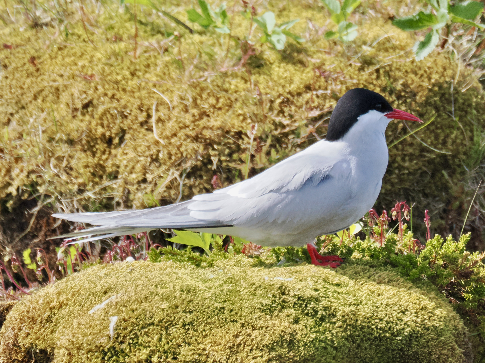
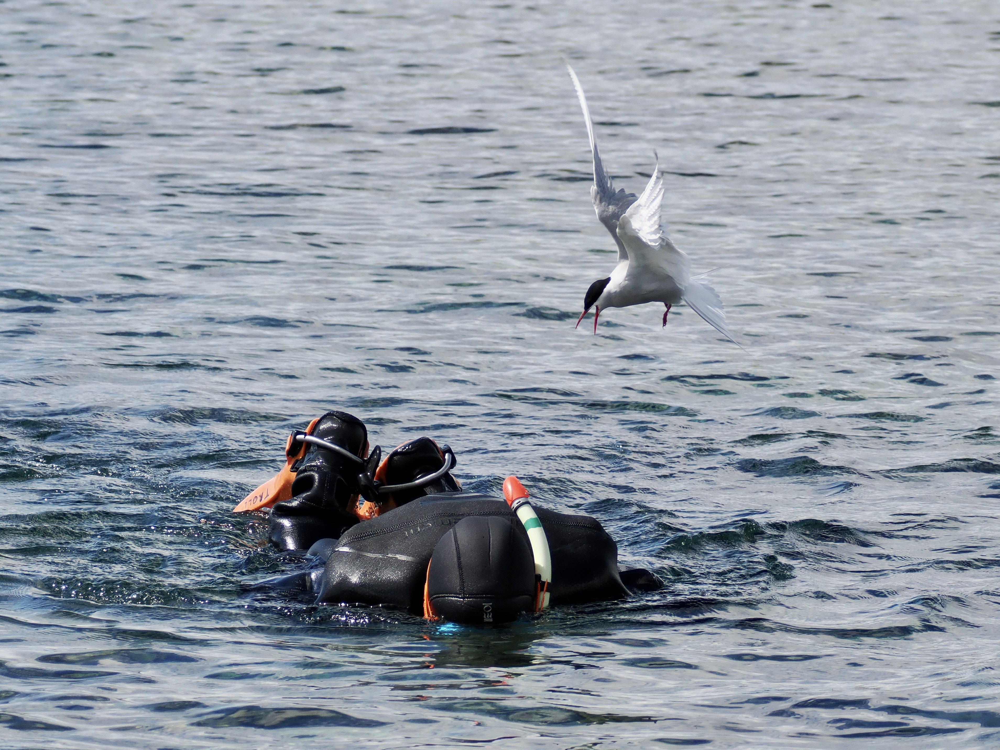

Arctic Tern
Sterna paradisaea
Order: Charadriiformes
Family: Laridae

A smallish tern with a black cap and bright red bill. Belly is rather pale, but averages darker than the moustachial region. Boasts the longest migration of any animal on earth, travelling from Antarctic wintering grounds to the Arctic to breed.

Fiercely territorial while breeding; will attack anything of any size that comes too close to the nest. This one tried to divebomb a diver. In Iceland, some people raise long sticks into the air while trekking through tern colonies, as they seem to attack the highest point of the body. I've been in a colony once, and while the attacks didn't really hurt (they are known to draw blood though), perhaps it's best to let them be at peace.